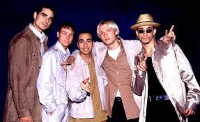

1990–1994: Formation and early years
Howie Dorough and AJ McLean were natives of Orlando, Florida, who met each other and later discovered Nick Carter through auditions.[13] The three, realizing that they could harmonize together, decided to form a trio.[13] Cousins Kevin Richardson and Brian Littrell, both from Lexington, Kentucky, sang in local church choirs and festivals when they were children.[13] Richardson moved to Orlando in 1990, where he worked at Walt Disney World and concentrated on music at night. Eventually, he met Dorough, Carter, and McLean through a co-worker, and the four decided to form a group.[13]
In the course of all this, Lou Pearlman in 1992 placed an ad in the Orlando Sentinel to compose a vocal group.[14] McLean, who was the first to audition for Pearlman in his living room, became the group's first member.[14] In January 1993, Pearlman held an open casting call and hundreds of young performers auditioned at his blimp hangar in Kissimmee.[14] Eventually, Carter, Dorough, and Richardson were selected after meeting Pearlman's expectations.[15] Littrell flew from Kentucky to Orlando to formally join the group on April 20, 1993, a day after receiving a phone call from Richardson about it. Thus, April 20 became their anniversary date.[16] Pearlman decided to call them Backstreet Boys, after Orlando's Backstreet Market, an outdoor flea market near International Drive which was also a teen hangout.[14][17]
The Backstreet Boys had their very first performance at SeaWorld Orlando on May 8, 1993.[18] The group then continued to perform in various venues during summer 1993, from shopping malls, restaurants, to a high-profile charity gala in Fort Lauderdale, Florida.[19] With a change in management in the fall, they began to tour schools across the U.S. (including Littrell's former school, Tates Creek High School), building a fan base while trying to get a record deal. Mercury Records nearly signed them in 1993, but the deal fell through at the last minute because longtime Mercury recording artist John Mellencamp threatened to leave the label if they got in boy band business.[20] However, in February 1994, Jeff Fenster (then senior VP A and R Zomba/JIVE Records) and David Renzer (then senior VP/GM of Zomba Music Publishing) caught the group performing at a high school in Cleveland, and signed them to their first record deal.[21]